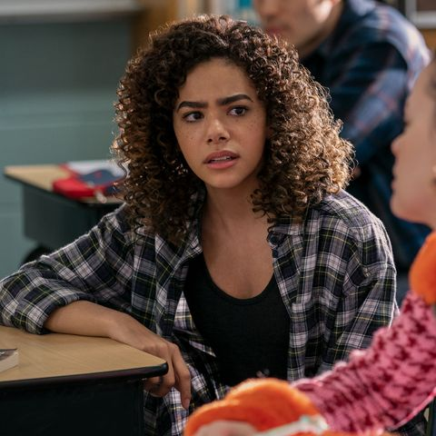

| Georgia Miller/Randolph | Thirty-year-old mother, Georgia, after being a teenage mother to Ginny, she decides to move allthetime she finally settles down with her daughter Ginny and son Austin to give them a better life than she had in the fictional New England town of Wellsbury.When Georgia moves to a new town with her angsty teen daughter, Ginny and Ginny's younger brother, her secrets come to light as Ginny realizes who her mother truly is and what she's capable of. |
| Ginny Miller/ Randolph | Virginia "Ginny" Miller is a 16-year-old teenager who lives in Wellsbury, Massachusetts. She is the daughter of Georgia Miller and Zion Miller. She uncovers the truth of what her mother is capable of. Ginny's strong personality traits cause her transition into a new high school to be rather tumultuous. However, with her mother in her corner, they can get through anything. |
| Austin Miller/Randolph | Austin Miller is a male child who lives in Wellsbury, Massachusetts. He is the son of Georgia Miller, as well as the younger half-brother of Ginny Miller. Austin's biological father who was in prison until his release which is in Season 2. |
| Paul Randolph | Mayor Paul Randolph is the mayor of Wellsbury, Massachusetts. Marries Georgia Miller. |
| References for Images and Description: | (Ginny & Georgia, 2022) Wiki Targeted (Entertainment). (n.d.). Ginny & Georgia Wiki. https://ginnyandgeorgia.fandom.com/wiki/Austin_Miller Opie, D. (2023, January 31). Ginny and Georgia season 3 potential release date, cast, plot, and more. Digital Spy. https://www.digitalspy.com/tv/ustv/a42386399/ginny-and-georgia-season-3-release-date-netflix/ Ginny & Georgia. (2022b, November 17). Jacketars. https://www.jacketars.com/product-tag/ginny-georgia/ M. (2021, April 18). Georgia miller. Pinterest. https://www.pinterest.ph/pin/590956782355478290/ Truffaut-Wong, O. (2023, January 6). Scott Porter Is the King of Comfort TV. The Cut. https://www.thecut.com/2023/01/scott-porter-ginny-and-georgia-netflix-tv-interview.html https://www.charactour.com/hub/characters/view/Virginia-Ginny-Miller.Ginny-and-Georgia#:~:text=Personality%E2%80%A6,can%20get%20through%20anything... | S1 AND S2 ARE AVAILABLE IN NETFLIX NOW, CHECK IT OUT